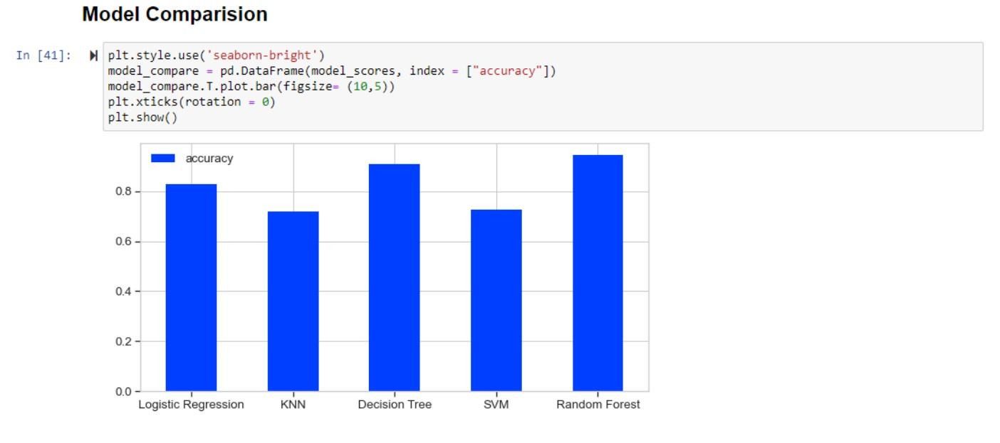
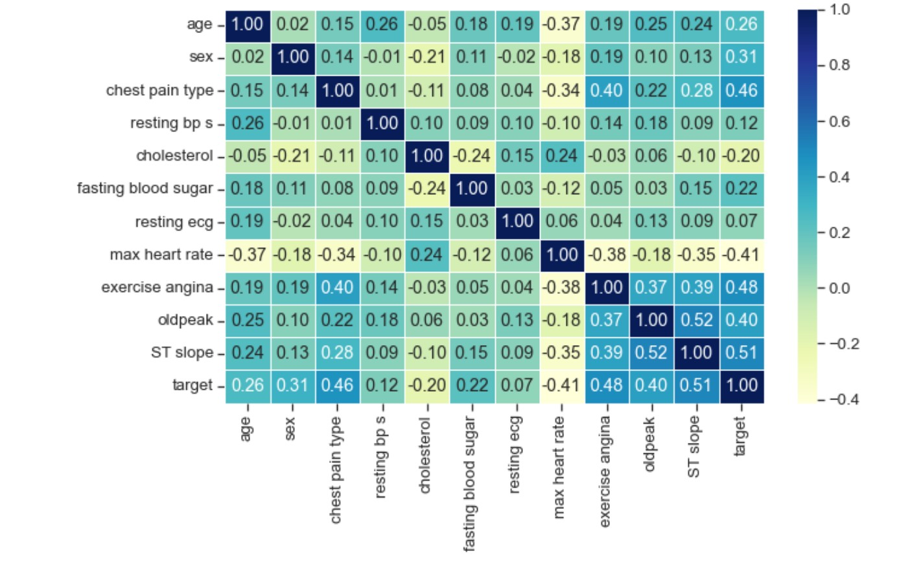
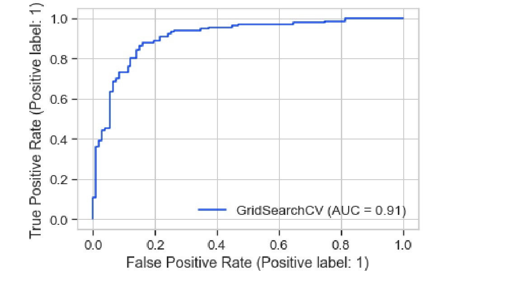
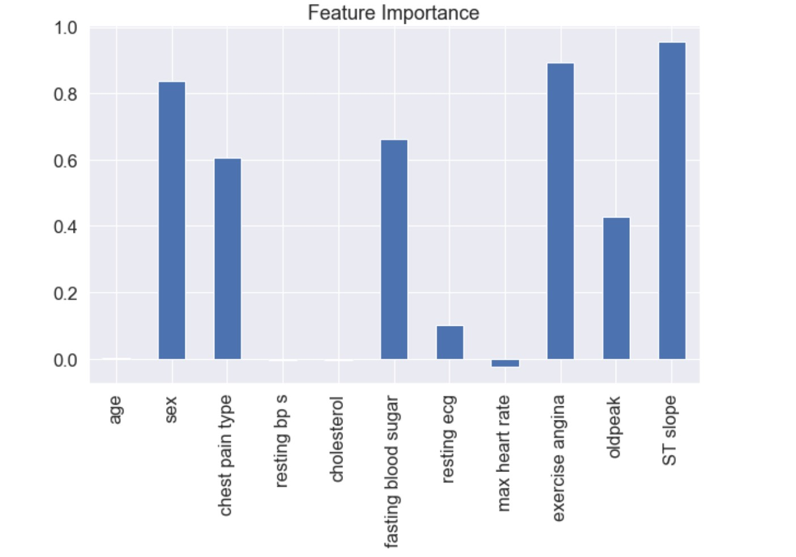
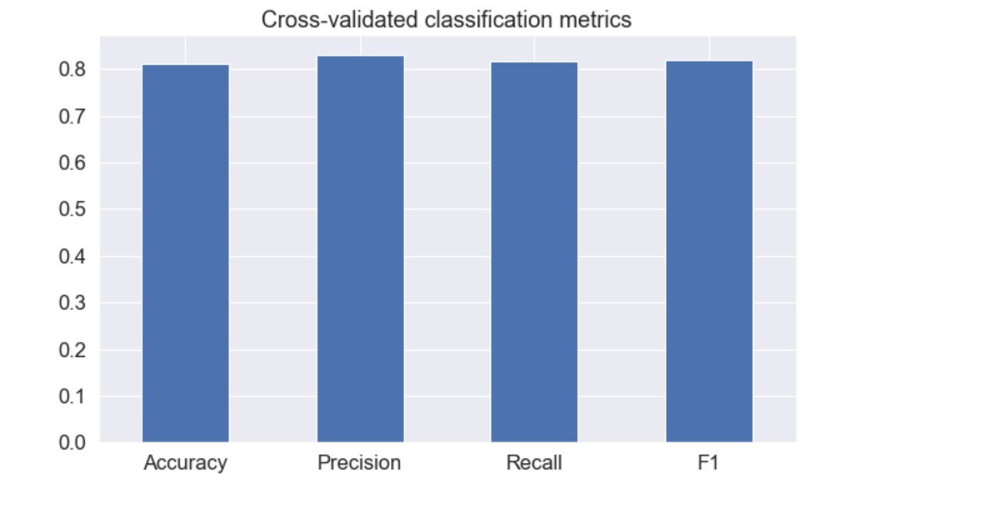
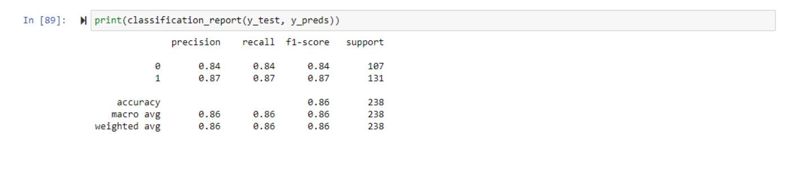
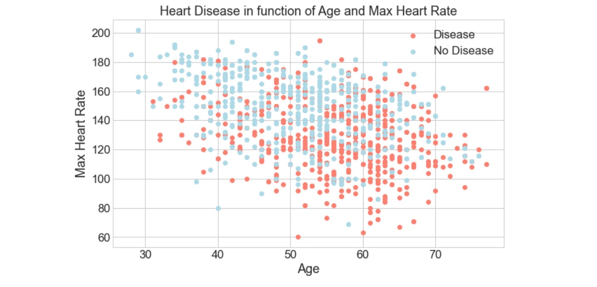
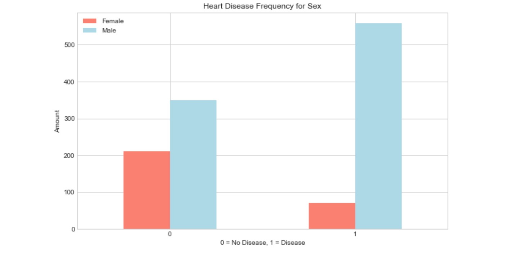
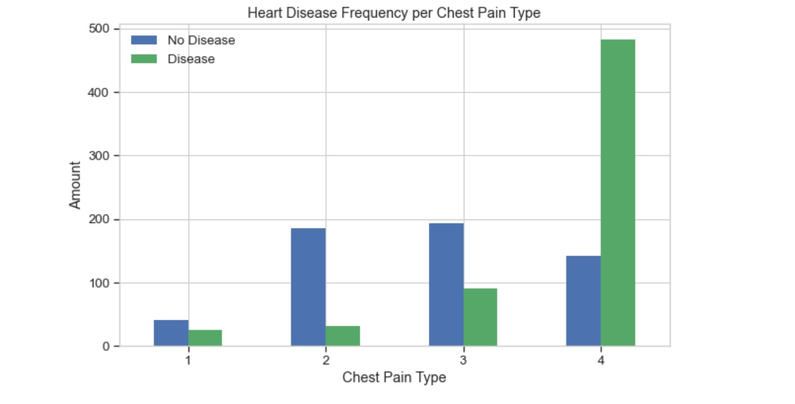
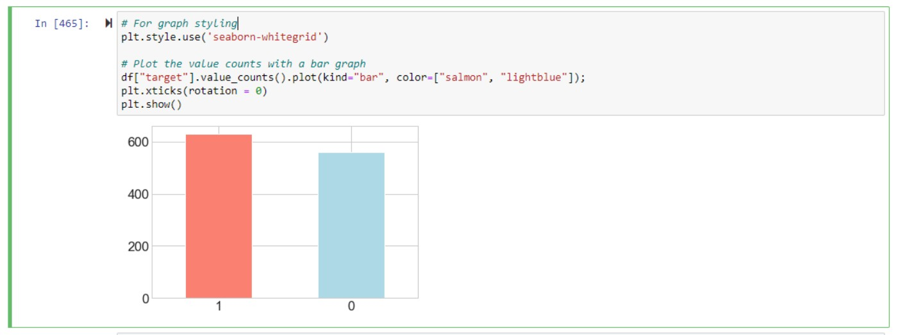

Heart Disease Prediction Using Machine Learning
Research overview
Research objective
Compare classification algorithms for predicting heart disease from structured patient attributes.
Methodology
The report explores sex, age, maximum heart rate, chest pain and correlations, then compares Decision Tree, Random Forest, SVM, Logistic Regression and KNN using model evaluation and cross-validation.
Results and interpretation
The report identifies Random Forest as the strongest classifier, with accuracy of approximately 94%. This is an academic experiment, not a clinically validated diagnostic tool.
Research visualisations




















Read the full academic report
Original academic document · 21 pages · personal student identifiers removed where found.
Open full PDF in new tab Download PDF
If your browser cannot display the embedded PDF, use the open or download link above.
Source code and project files
Explore the original implementation and available project materials in the GitHub repository.
View project on GitHub ↗